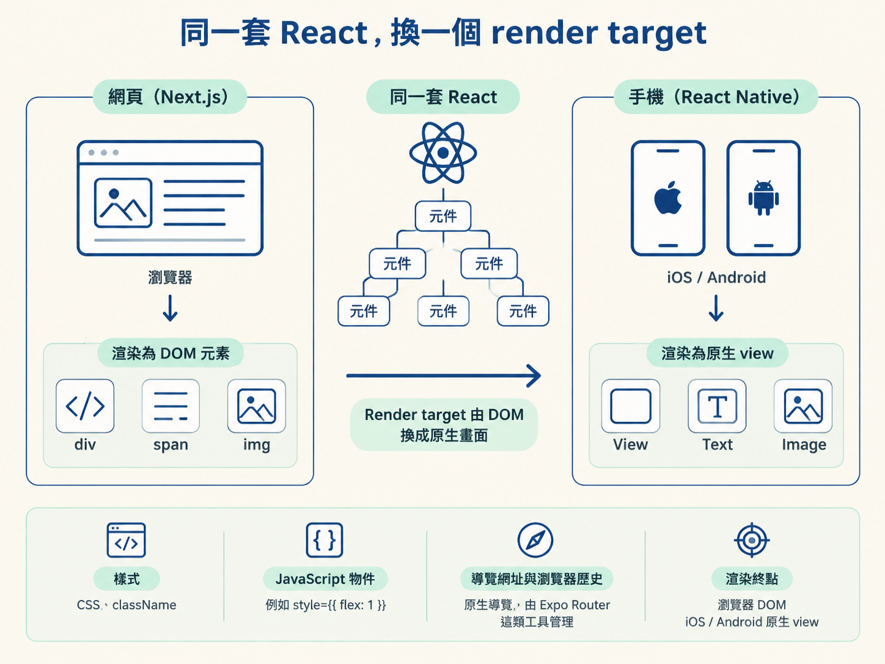
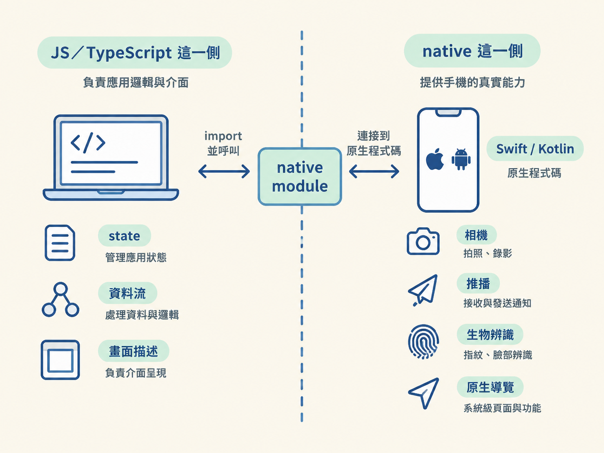

讀完這一節，你應該能說清楚三件事：React Native 的 JavaScript 跑在哪裡、畫面如何變成手機上的原生元件，以及它為什麼和瀏覽器裡的 React 屬於兩套不同的執行環境。
你寫 Next.js 時，腦中通常有幾個幾乎不用特別思考的預設：畫面是 DOM，標籤是 <div> 和 <span>，樣式是 CSS，路由是網址。
這些預設太穩固了，所以第一次打開 React Native 專案，看到 <View>、<Text> 和 style={{ flex: 1 }}，很容易冒出一個疑問：「這不是 React 嗎？可是怎麼又怪怪的？」
這一節不是要立刻教你寫手機元件，而是先處理那個「怪怪的」。如果你沒有在腦中畫清楚 JS 與 native 的界線，後面遇到「為什麼 Expo Go 不夠用」、「為什麼裝一個套件就要重新編譯」，或「為什麼某些功能在模擬器裡永遠測不出來」，就只能把它們當成零散規則背起來。
相反地，只要界線清楚，這些現象就會像拼圖一樣接上彼此。現在就先把這條線畫出來。
React 本身主要做一件事：根據 state 算出「畫面應該長什麼樣子」，再把差異套用到某個目標上。這個目標就叫做 render target，也就是畫面最後要被呈現到哪裡。
在網頁裡，render target 是瀏覽器的 DOM。React DOM 會把虛擬 DOM 的差異寫進真實 DOM；在手機上，render target 則換成 iOS 與 Android 的原生畫面，由 React Native 把同一棵 React 元件樹接到原生元件上。
所以，React Native 不是「在手機上跑網頁」，也不是「用 JavaScript 假裝成原生」。它保留了 React 的渲染流程，只是把 render 的終點從 DOM 換成原生 view。
可以把它想成同一份劇本，換了不同的舞台：劇本裡的資料流和畫面邏輯大致相同，但網頁由瀏覽器負責搭台，手機則由 iOS 或 Android 的原生系統負責搭台。這也是為什麼同一份程式碼能同時支援 iOS 與 Android。

把兩邊並排比較，差異會更清楚：
| 面向 | 網頁（Next.js） | React Native |
|---|---|---|
| 畫面元素 | <div>、<span>、<img> | <View>、<Text>、<Image> |
| 樣式 | CSS、className | JavaScript 物件，例如 style={{ flex: 1 }} |
| 導覽 | 網址與瀏覽器歷史 | 原生導覽，由 Expo Router 這類工具管理 |
| 渲染終點 | 瀏覽器 DOM | iOS / Android 原生 view |
看起來好像只是把標籤名稱換掉，但關鍵其實不在標籤，而在「誰在畫」。網頁上，真正把畫面畫出來的是瀏覽器；手機上，真正把畫面畫出來的是原生系統。React Native 負責把 React 的描述轉成原生系統能理解的指令。
React Native app 裡的大部分程式碼，都是 JavaScript 或 TypeScript。你寫的 state、資料流、畫面描述，以及按鈕被點擊後要做什麼，全都活在 JS 這一側。
可以把 JS 想成一份劇本：它決定什麼時候出現什麼畫面，也決定使用者做了某個動作後，接下來要發生什麼事。
但手機有些能力，不是光靠 JS 就能直接碰到的。相機、推播、生物辨識、系統層的錯誤監控，以及原生導覽列，都住在界線的另一側。這些能力通常要透過 Swift 或 Kotlin 這類原生語言來接。
工程上的做法，是把原生能力包裝成 JavaScript 可以呼叫的介面。這種被包好的模組，就叫做 native module（原生模組）。
這不是只存在於文件裡的抽象名詞。課程裡會遇到的幾個套件，本質上都和 native module 有關：Sentry 是 native module，相機權限那組 API 是 native module，Clerk 的原生登入和 Expo 的 native tabs，也都踩在這一側。
你在 JS 裡用 import 匯入它們，呼叫時看起來像是在使用普通函式；但函式背後，其實有真正的原生程式碼在運作。

React Native 的日常是：你在 JS 這一側寫劇本；需要碰到手機的真實能力時，就隔著一條線呼叫 native 那一側的裝置。
理解這條線之後，很多後續現象就不再神祕。
純 JS 的改動可以即時生效，因為你改的只是劇本內容；但如果新增了一個 native module，就像在舞台上加裝一台新的機械裝置。這時候光是重新念台詞不夠，還得重新施工、重新驗收。
這就是「為什麼裝個套件要 rebuild」的根源。Step 4 會再把這件事完整拆開來說。
同樣的道理，也能解釋 Expo Go 為什麼有它的限制。Expo Go 可以想成一個預先裝好固定幾組裝置的通用舞台。你能直接使用的原生能力，受限於它事先內建的內容；你不能隨意把新的機械裝進這個舞台。
當你的 app 需要 Expo Go 沒有內建的原生能力時，就必須自己產出一個包含這些能力的專屬舞台，也就是 development build。這會是 Step 3 的主題。
React Native 保留了 React 的元件樹與資料流，但把 render 的終點從瀏覽器 DOM 換成 iOS / Android 的原生 view。app 邏輯大多活在 JS 這一側；當程式需要碰到手機硬體或系統能力時，則要透過另一側的 native module。這條 JS 與 native 的界線，是後面「Expo Go 不夠用」和「裝套件要重建」等現象的共同根源。
把 render target 換掉之後，下一個問題自然會出現：到底要怎麼開始一個手機專案？總不能每次都自己手刻 iOS 與 Android 的底層設定。
下一節要談的 Expo，就是用來回答這個問題的工具。它會幫你處理專案起步與原生環境，讓你不用一開始就直接跳進底層施工現場。